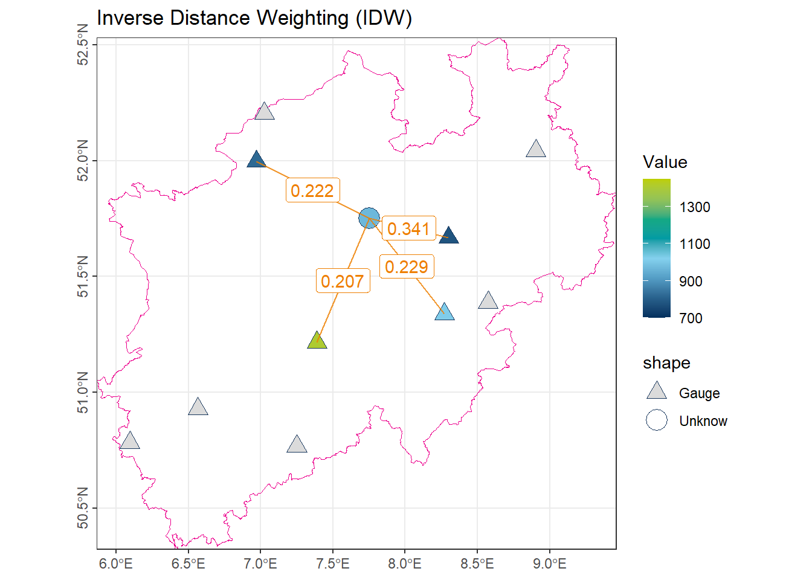
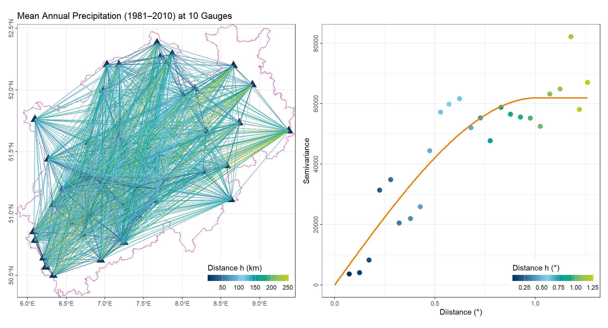
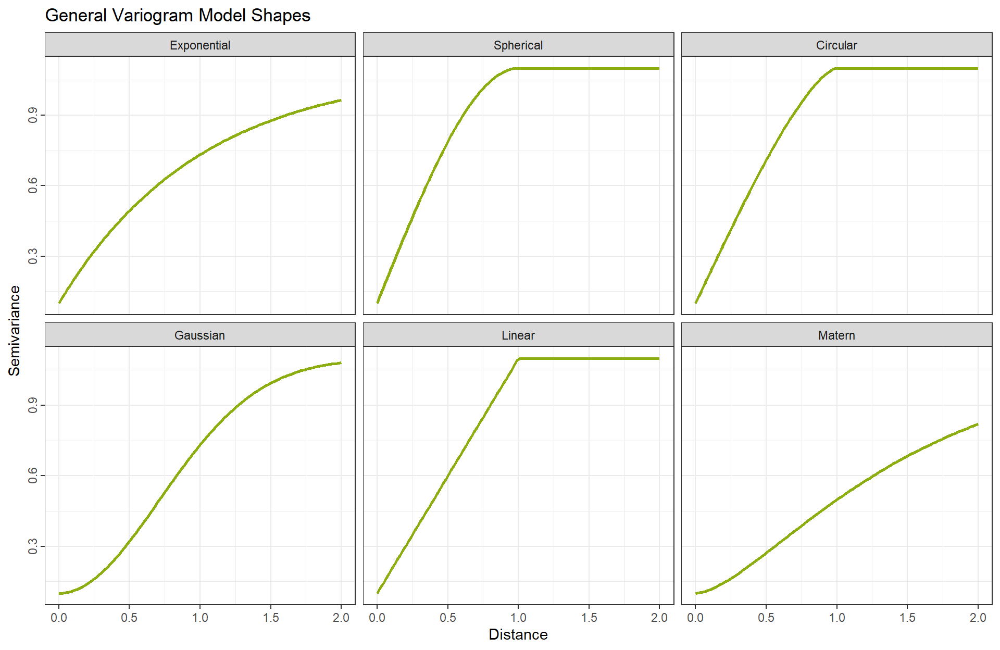
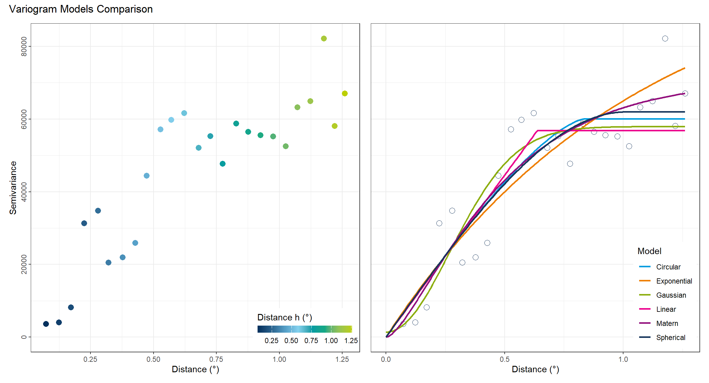
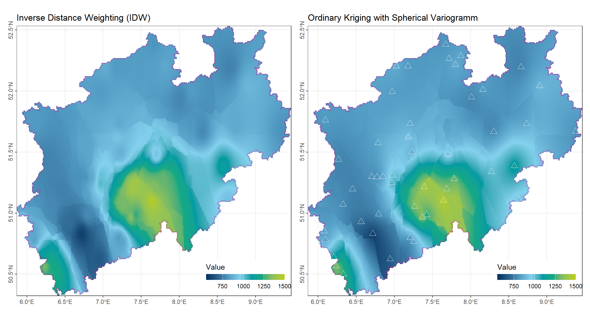
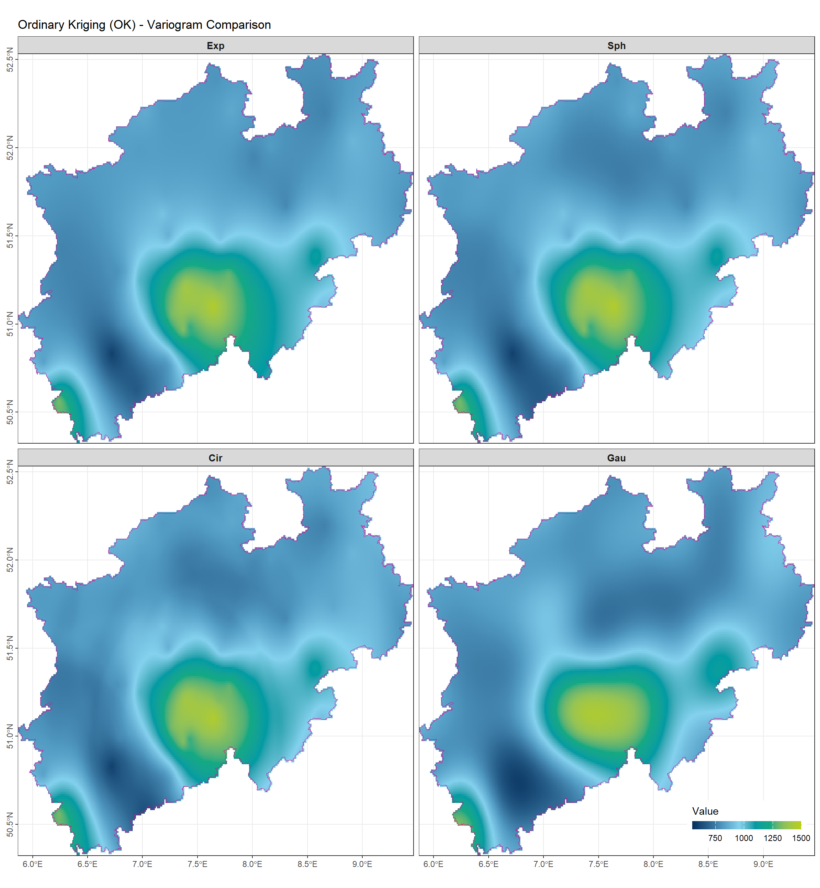

# LIBRARY
library(tidyverse)
theme_set(theme_bw())
library(gstat)
library(terra)
library(tidyterra)
library(patchwork)
# DATEN
vct_Boundry_NRW <- vect("../data_share/vct_Boundry_NRW.geojson") # |> project("EPSG:25832")
vct_Station_NRW_S10 <- vect("../data_share/vct_Station_NRW_S10.geojson") # |> project("EPSG:25832")
vct_Station_NRW_S50 <- vect("../data_share/vct_Station_NRW_S50.geojson") # |> project("EPSG:25832")
vct_Segment_S10 <- vect("../data_share/vct_Segment_S10.geojson") # |> project("EPSG:25832")
vct_Point_Unknow <- vect("../data_share/vct_Point_Unknow.geojson") # |> project("EPSG:25832")Spatial Interpolation
1 Theory
Spatial interpolation is the process of estimating values at unmeasured locations based on observations from nearby points. In this section, we introduce several commonly used approaches.
1.1 Weighted Mean Concept in Spatial Interpolation
Most spatial interpolation methods, from the simplest global mean to nearest-neighbor, IDW, and Kriging, can be understood within a weighted-mean framework. The estimated value at an unmeasured location \(x_0\) is a weighted sum of observed values:
\[ \hat{z}(x_0) = \sum_{i=1}^{n} \lambda_i z_i \]
where \(\lambda_i\) is the weight assigned to observation \(i\).
- In the global mean, all observations are equally weighted: \(\lambda_i = 1/n\).
- In nearest-neighbor methods, only the closest points have non-zero weight: \(\lambda_i = 1/k\).
- In inverse distance weighting (IDW), weights decrease with distance: \(\lambda_i \propto 1/d_i^p\).
- In Kriging, weights are chosen to minimize estimation variance while accounting for spatial correlation and ensuring unbiasedness.
Thus, every interpolation method can be interpreted as defining a specific set of weights \(\lambda_i\) to combine observed values into an estimate. In the following sections, we will focus primarily on calculating the weights \(\lambda_i\), as the weighted mean step itself is straightforward.
Symbols used:
- \(x_0\) : location of the unmeasured point
- \(x_i\) : location of the \(i\)-th observed point
- \(\lambda_i\) : weight for observation \(i\)
- \(z_i\) : observed value at location \(x_i\)
- \(\hat{z}(x_0)\) : estimated value at location \(x_0\)
- \(n\) : total number of observed points
- \(k\) : number of nearest neighbors considered
- \(d_i\) : distance between \(x_0\) and \(x_i\)
- \(p\) : distance weighting power (for IDW)
- \(\gamma(h)\) : semivariance for lag distance \(h\) in the variogram
- \(\mu\) : Lagrange multiplier in ordinary Kriging
Libraries and Data used:
Code
color_RUB_blue <- "#17365c"
color_RUB_green <- "#8dae10"
color_TUD_middleblue <- "#006ab2"
color_TUD_lightblue <- "#009de0"
color_TUD_green <- "#007d3f"
color_TUD_lightgreen <- "#69af22"
color_TUD_orange <- "#ee7f00"
color_TUD_pink <- "#EC008D"
color_TUD_purple <- "#54368a"
color_TUD_redpurple <- "#93107d"
color_SafetyOrange <- "#ff5e00"
color_DRESDEN <- c("#03305D", "#28618C", "#539DC5", "#84D1EE", "#009BA4", "#13A983", "#93C356", "#BCCF02")To illustrate the concepts of different spatial interpolation approaches, we use the mean annual precipitation (1981–2010) recorded at 10 gauges in North Rhine-Westphalia (NRW).
- The orange point represents an unmeasured location, whose precipitation value is to be estimated using various interpolation methods.
- The orange lines connect this unmeasured point to the observation stations utilized by each method.
- The labels on the lines indicate the corresponding weights \(\lambda_i\) assigned to each station in the interpolation process.

1.2 Null Model (Global Mean)
The simplest model assumes that the value at any unmeasured location is equal to the mean of all observed values. Within the weighted mean framework, all weights are equal:
\[ \lambda_i = \frac{1}{n} \quad \text{for all } i \]
num_GlobalMean <- vct_Station_NRW_S10$NiederschlagJahr |> mean()
num_GlobalMean[1] 928.1
1.3 Nearest Neighbor (1-nearest)
This method assigns the value of the closest observation to the unmeasured location. Within the weighted mean framework, only the nearest point has weight 1, while all others have weight 0:
\[ \lambda_i = \begin{cases} 1 & \text{if } x_i \text{ is the nearest point} \\ 0 & \text{otherwise} \end{cases} \]
idx_Near1 <- order(vct_Segment_S10$length_km)[1]
num_Near1 <- vct_Station_NRW_S10$NiederschlagJahr[idx_Near1]
num_Near1[1] 778.9
1.4 k-Nearest Neighbors
This method estimates the value at an unmeasured location using the average of the \(k\) nearest observations. Within the weighted mean framework, each of the \(k\) nearest neighbors is assigned equal weight:
\[ \lambda_i = \begin{cases} \frac{1}{k} & \text{if } x_i \text{ is among the $k$ nearest} \\ 0 & \text{otherwise} \end{cases} \]
idx_Near5 <- order(vct_Segment_S10$length_km)[1:4]
num_Near5 <- vct_Station_NRW_S10$NiederschlagJahr[idx_Near5] |> mean()
1.5 Inverse Distance Weighting (IDW)
In this method, the weight of each observation is inversely proportional to its distance from the unmeasured location:
\[ \lambda_i = \frac{d_i^{-p}}{\sum_{j=1}^{n} d_j^{-p}} \]
where \(d_i\) is the distance between the unmeasured location and observation \(i\), and \(p\) is the distance weighting power, which controls how quickly weights decrease with distance.
Note: A larger value of \(p\) assigns more weight to closer points. Typically, \(p = 1\) is used.
num_IDW_ID <- 1/(vct_Segment_S10$length_km[idx_Near5])
num_IDW_Weight <- round(num_IDW_ID / sum(num_IDW_ID), 3)
num_IDW <- sum(vct_Station_NRW_S10$NiederschlagJahr[idx_Near5] * num_IDW_Weight)
num_IDW[1] 971.208
1.6 Ordinary Kriging
Ordinary Kriging is a geostatistical interpolation method that estimates values at unmeasured locations by accounting for the spatial correlation between observations. It computes location-specific weights \(\lambda_i\) using the semivariogram \(\gamma(h)\), ensuring that the estimator is unbiased and has minimum estimation variance.
Unlike previous methods (mean, nearest neighbor, IDW), where the weights depend only on distances between the unmeasured point and observed stations, Kriging weights are derived from the spatial structure of the variable itself. This means that for different variables (e.g., precipitation, temperature, soil moisture), even with the same observation locations, the Kriging weights will differ because the spatial correlation patterns are different.
1.6.1 Fitting the Variogram
The variogram \(\gamma(h)\) describes how data similarity decreases with increasing distance \(h\). It is estimated from the observed data using pairs of points separated by approximately the same distance:
\[ \gamma(h) = \frac{1}{2|N(h)|} \sum_{(i,j) \in N(h)} (z_i - z_j)^2 \]
where \(N(h)\) is the set of all pairs of points separated by lag distance \(h\).

After computing the empirical variogram, a theoretical model is fitted to describe the spatial dependence. Common variogram models include:
- Exponential
\[ \gamma(h) = \begin{cases} c_0 + c \left(1 - \exp\left(-\frac{h}{a}\right)\right), & h > 0 \\ 0, & h = 0 \end{cases} \]
- Spherical
\[ \gamma(h) = \begin{cases} c_0 + c \left(\frac{3h}{2a} - \frac{1}{2} \left(\frac{h}{a}\right)^3 \right), & 0 < h \le a \\ c_0 + c, & h > a \\ 0, & h = 0 \end{cases} \]
- Circular
\[ \gamma(h) = \begin{cases} c_0 + c \left( \frac{2}{\pi} \left[ \arccos\left(\frac{h}{a}\right) - \frac{h}{a} \sqrt{1 - \left(\frac{h}{a}\right)^2} \right] \right), & 0 < h \le a \\ c_0 + c, & h > a \\ 0, & h = 0 \end{cases} \]
- Gaussian
\[ \gamma(h) = \begin{cases} c_0 + c \left(1 - \exp\left(-\frac{h^2}{a^2}\right)\right), & h > 0 \\ 0, & h = 0 \end{cases} \]
- Linear
\[ \gamma(h) = \begin{cases} c_0 + \text{slope} \cdot h, & h > 0 \\ 0, & h = 0 \end{cases} \]
- Matern
\[ \gamma(h) = \begin{cases} c_0 + c \left( 1 - \frac{1}{2^{\nu-1} \Gamma(\nu)} \left( \frac{2 \sqrt{\nu} h}{a} \right)^\nu K_\nu\left( \frac{2 \sqrt{\nu} h}{a} \right) \right), & h > 0 \\ 0, & h = 0 \end{cases} \]
Where:
- \(c_0\) = nugget
- \(c\) = partial sill
- \(a\) = range
- \(\nu\) = Matern smoothness parameter
- \(K_\nu\) = modified Bessel function of the second kind

In R, this step is typically performed automatically to minimize the difference between the model function and the empirical scatter points.
1.6.2 Computing the Weights with the Lagrange Method
Using the fitted variogram and assuming second-order stationarity (constant mean and spatial dependence only on distance), the Kriging weights are obtained by solving the following system.
The following presents the mathematical formulation for determining the weights assigned to all observations when estimating the value at a target location.
- Estimation Variance
The estimation error is defined as:
\[ \epsilon = \hat{Z}(x_0) - Z(x_0) = \sum_{i=1}^{n} \lambda_i Z(x_i) - Z(x_0) \]
The Kriging variance, i.e., the variance of the estimation error, is:
\[ \sigma_K^2 = Var[\epsilon] = Var\left[\sum_{i=1}^{n} \lambda_i Z(x_i) - Z(x_0)\right] \]
Using the semivariogram \(\gamma(h)\) fitted from all observations:
\[ Var(Z(x_i) - Z(x_j)) = 2\gamma(x_i - x_j) \]
we can write the Kriging variance in terms of the weights:
\[ \sigma_K^2 = \sum_{i=1}^{n} \sum_{j=1}^{n} \lambda_i \lambda_j \gamma(x_i - x_j) - 2 \sum_{i=1}^{n} \lambda_i \gamma(x_i - x_0) + \gamma(0) \]
This is a quadratic function of the weights \(\lambda_i\).
- Unbiasedness Constraint
Ordinary Kriging assumes an unknown but constant mean \(m\), so the estimator must be unbiased:
\[ E[\hat{Z}(x_0) - Z(x_0)] = 0 \quad \Rightarrow \quad \sum_{i=1}^{n} \lambda_i = 1 \]
This is a linear equality constraint.
- Lagrange Multiplier Method
To minimize \(\sigma_K^2\) under the constraint \(\sum \lambda_i = 1\), define the Lagrangian function:
\[ L(\lambda_1, \dots, \lambda_n, \mu) = \sigma_K^2 + \mu \left( \sum_{i=1}^{n} \lambda_i - 1 \right) \]
- \(\mu\) is the Lagrange multiplier, enforcing the sum-of-weights constraint.
- Derivatives of the Lagrangian
Take partial derivatives of \(L\) with respect to each \(\lambda_i\) and \(\mu\):
- With respect to \(\lambda_i\):
\[ \frac{\partial L}{\partial \lambda_i} = \frac{\partial \sigma_K^2}{\partial \lambda_i} + \mu = 0 \]
Compute \(\partial \sigma_K^2 / \partial \lambda_i\):
\[ \frac{\partial \sigma_K^2}{\partial \lambda_i} = 2 \sum_{j=1}^{n} \lambda_j \gamma(x_i - x_j) - 2 \gamma(x_i - x_0) \]
Divide by 2 and redefine \(\mu' = \mu/2\):
\[ \sum_{j=1}^{n} \lambda_j \gamma(x_i - x_j) + \mu' = \gamma(x_i - x_0) \]
- With respect to \(\mu\):
\[ \frac{\partial L}{\partial \mu} = \sum_{i=1}^{n} \lambda_i - 1 = 0 \]
This ensures unbiasedness.
- Matrix Form
Combine all \(n\) equations for \(\lambda_i\) with the constraint for \(\mu\):
\[ \begin{bmatrix} \gamma(x_1-x_1) & \cdots & \gamma(x_1-x_n) & 1 \\ \vdots & \ddots & \vdots & \vdots \\ \gamma(x_n-x_1) & \cdots & \gamma(x_n-x_n) & 1 \\ 1 & \cdots & 1 & 0 \end{bmatrix} \begin{bmatrix} \lambda_1 \\ \vdots \\ \lambda_n \\ \mu \end{bmatrix} = \begin{bmatrix} \gamma(x_1-x_0) \\ \vdots \\ \gamma(x_n-x_0) \\ 1 \end{bmatrix} \]
- The top-left \(n \times n\) block contains semivariances between observed points.
- The last row and column enforce \(\sum \lambda_i = 1\).
- The right-hand side contains semivariances between each observation and the target point.
Once the weights for all observations are determined, the estimation process proceeds similarly to IDW interpolation. However, in R, a more efficient workflow is available using the gstat and terra packages, which will be demonstrated in the next chapter.
2 Spatial Interpolation in R
Spatial interpolation is a fundamental technique in geostatistics and environmental sciences, used to estimate values of a variable at unsampled locations based on observations at known points. In R, this can be efficiently performed using the gstat and terra packages. The typical workflow involves two main steps:
- Definition of the interpolation model: specifying the method and its associated parameters via the
gstat()function. - Prediction at unmeasured locations: applying the defined model to a spatial grid using the
interpolate()function fromterra.
This workflow supports several widely used interpolation methods, including nearest neighbor, inverse distance weighting (IDW), and ordinary kriging.
2.1 Basic Workflow
2.1.1 Defining the Interpolation Model with gstat()
The gstat() function provides a unified framework for specifying interpolation models. It allows the user to define the variable to be interpolated, the spatial coordinates, and method-specific parameters controlling interpolation behavior.
General Syntax
#| eval: false
model_Interpolate <- gstat(
formula = variable ~ 1,
locations = ~x + y,
data = df_Data,
nmax = 10,
set = list(idp = 2)
)Key Arguments
formula = variable ~ 1Specifies the target variable for interpolation. The right-hand side1indicates that only a constant mean is assumed, i.e., no trend or covariates are considered.- Example:
precip ~ 1for ordinary kriging or IDW. - If predictors are included, e.g.,
precip ~ elevation, the model becomes universal kriging.
- Example:
locations = ~x + yDefines the coordinate columns in the dataset.data = df_DataThe input dataset, which may be a dataframe or a spatial object such asSpatVector,sf, orSpatialPointsDataFrame.Neighbor selection parameters (
nmax,nmin,maxdist) Control the spatial neighborhood used for interpolation.nmax: maximum number of neighbors considered.nmin: minimum number of neighbors required for prediction.maxdist: maximum search distance; points beyond this threshold are ignored. These parameters influence both the smoothness of the interpolated surface and computational efficiency.
-set = list() Method-specific parameters.
For IDW,
set = list(idp = p)defines the power parameter \(p\).idp = 0: equal weighting for all neighbors.idp > 1: higher weight for closer points; larger \(p\) → more localized influence.
For nearest neighbor, set
nmax = 1.For kriging, variogram parameters are specified using the
modelargument.modelRequired for kriging methods; specifies the fitted variogram model, typically generated withvariogram()andfit.variogram().
| Method | Key Parameters | Description |
|---|---|---|
| Nearest Neighbor | nmax = 1 |
Assigns the value of the closest observed point |
| k-Nearest Neighbor | nmax = k |
Uses the mean of the k nearest observations |
| IDW | set = list(idp = p) |
Power parameter \(p\) controls weight decay with distance |
| Ordinary Kriging | model = v_model (variogram) |
Accounts for spatial correlation and provides estimation variance |
In summary, gstat() acts as the central function for constructing spatial interpolation models. The choice of formula, neighbor parameters (nmax, nmin), and method-specific arguments (set or model) determines the behavior of the interpolation method.
2.1.2 Applying the Interpolation Model with interpolate()
After defining the model, the interpolate() function from the terra package is used to estimate values at unsampled locations, typically on a raster grid.
rst_Interpolate <- interpolate(
rst_Template,
model_Vario,
debug.level = 0
)Main Parameters
-raster_template: A SpatRaster object defining the spatial extent, resolution, and coordinate reference system for the interpolated output. -model: The interpolation model object created via gstat(). -debug.level: Controls the verbosity of output messages; commonly set to 0 (silent) or 1 (minimal information).
The function returns a raster object containing predicted values at each grid cell, allowing for subsequent visualization and analysis.
By combining gstat() and interpolate(), R provides a flexible and robust framework for spatial prediction, enabling the creation of continuous surfaces from point measurements. This approach is widely applicable in hydrology, meteorology, ecology, and other spatially explicit fields.
2.1.3 Example Dataset
For demonstration purposes, we consider the average precipitation (1981–2010) recorded at 50 meteorological stations in North Rhine-Westphalia (NRW). The dataset comprises the coordinates of each station and the corresponding mean precipitation values. This dataset will be used to illustrate spatial interpolation methods.
Code
ggplot() +
geom_spatvector(data = vct_Station_NRW_S50, aes(fill = NiederschlagJahr),
shape = 24, size = 4) +
geom_spatvector(data = vct_Boundry_NRW, color = color_TUD_pink, fill = NA) +
scale_fill_gradientn("Value",
colors = color_DRESDEN,
na.value = "transparent",
limits = c(550, 1500)) +
ggtitle('Mean Annual Precipitation (1981–2010)') +
coord_sf(expand = FALSE) +
theme(axis.title = element_blank(),
axis.text.y = element_text(angle = 90, hjust = .5))
In order to perform the interpolation, it is necessary to define a template raster, which specifies the locations where predictions should be made. The template raster allows the user to control the spatial resolution and the extent of the interpolation, ensuring that the resulting surface matches the desired research area and level of detail.
rst_Template_NRW <- rast(vct_Boundry_NRW, res = 0.01)
values(rst_Template_NRW) <- 1
rst_Template_NRW <- mask(rst_Template_NRW, vct_Boundry_NRW)
# Convert station SpatVector to a data.frame with coordinates
df_Station_NRW_S50 <- data.frame(geom(vct_Station_NRW_S50)[, c("x", "y")],
as.data.frame(vct_Station_NRW_S50))2.2 Nearest Neighbor (1-Nearest) and Thiessen Polygons
The nearest neighbor method is closely related to Thiessen polygons (also called Voronoi diagrams). In this approach, the study area is partitioned into polygons, each surrounding a single observation point. All locations within a polygon are assumed to have the same value as the observation at its center.
2.2.1 Nearest Neighbor (1-Nearest)
model_Near1 <- gstat(
formula = NiederschlagJahr ~ 1,
locations = ~x + y,
data = df_Station_NRW_S50,
nmax = 1,
set = list(idp = 0)
)
# Interpolate on raster grid
rst_Near1 <- interpolate(rst_Template_NRW, model_Near1, debug.level = 0) |>
mask(vct_Boundry_NRW)2.2.2 Thiessen Polygons
Thiessen polygons provide a geometric framework for nearest neighbor interpolation, particularly useful when measurement points are sparse, and smooth spatial gradients cannot be assumed.
The construction procedure is as follows:
- Triangulation: Connect all observation points to form a Triangulated Irregular Network (TIN) that satisfies the Delaunay criterion.
- Perpendicular Bisectors: Draw perpendicular bisectors for each triangle edge. The intersections of these bisectors define the vertices of the Thiessen polygons.
- Anchor Points: Each polygon contains exactly one observation point (the anchor), and all locations within the polygon are closer to this anchor than to any other observation.
The resulting Thiessen polygons effectively assign each unsampled location to the nearest observation, creating a spatial partitioning consistent with the 1-nearest neighbor principle.

In R, Thiessen polygons are implemented as Voronoi polygons using the voronoi() function:
vct_Voronoi_NRW_S50 <- voronoi(vct_Station_NRW_S50) |> crop(vct_Boundry_NRW)This function generates the polygonal tessellation corresponding to the nearest neighbor regions of the input points.
2.2.3 Comparison of Results
The following plots illustrate the outcomes of 1-nearest neighbor interpolation and Thiessen polygons applied to the same dataset.
As expected, both methods produce almost same results because Thiessen polygons are a geometric representation of the 1-nearest neighbor principle. Each unsampled location is assigned the value of the closest observation point in both approaches.
Visually, there is no obvious difference between the two methods; both generate a piecewise-constant surface with abrupt changes at the boundaries between regions influenced by different observation points.
Key observations:
- Both surfaces preserve the exact values of the original observations.
- Discontinuities occur along polygon edges or nearest-neighbor boundaries.
Code
gp_Near1 <- ggplot() +
geom_spatraster(data = rst_Near1, aes(fill = var1.pred)) +
geom_spatvector(data = vct_Boundry_NRW, color = color_TUD_pink, fill = NA) +
scale_fill_gradientn("Value",
colors = color_DRESDEN,
na.value = "transparent",
limits = c(550, 1500)) +
ggtitle('Nearest Neighbor (1-nearest)') +
coord_sf(expand = FALSE) +
theme(axis.title = element_blank(),
axis.text.y = element_text(angle = 90, hjust = .5),
legend.position = "inside",
legend.position.inside = c(0.99, 0.01),
legend.justification = c("right", "bottom"),
legend.direction = "horizontal",
legend.title.position = "top"
) +
guides(
fill = guide_colorbar(
barwidth = 8,
barheight = 0.6
)
)
gp_Voronoi_NRW_S50 <- ggplot() +
geom_spatvector(data = vct_Voronoi_NRW_S50, aes(fill = NiederschlagJahr)) +
geom_spatvector(data = vct_Boundry_NRW, color = color_TUD_pink, fill = NA) +
scale_fill_gradientn("Value",
colors = color_DRESDEN,
na.value = "transparent",
limits = c(550, 1500)) +
ggtitle('Thiessen Polygons') +
coord_sf(expand = FALSE) +
theme(axis.title = element_blank(),
axis.text.y = element_text(angle = 90, hjust = .5),
legend.position = "inside",
legend.position.inside = c(0.99, 0.01),
legend.justification = c("right", "bottom"),
legend.direction = "horizontal",
legend.title.position = "top"
) +
guides(
fill = guide_colorbar(
barwidth = 8,
barheight = 0.6
)
)
(gp_Near1 | gp_Voronoi_NRW_S50)
2.3 k-Nearest Neighbors (k-NN)
model_Near5 <- gstat(
formula = NiederschlagJahr ~ 1,
locations = ~x + y,
data = df_Station_NRW_S50,
nmax = 5,
set = list(idp = 0)
)
# Interpolate on raster grid
rst_Near5 <- interpolate(rst_Template_NRW, model_Near5, debug.level = 0) |>
mask(vct_Boundry_NRW)Compared to the 1-nearest method, the k-nearest approach still exhibits noticeable block-like boundaries. However, the resulting surface is already smoother, as each block incorporates information from multiple observation points rather than relying on a single nearest station. A remaining drawback is that, at some observation locations, the interpolated value may differ from the original measured value, leading to local inconsistencies.
Code
gp_Near5 <- ggplot() +
geom_spatraster(data = rst_Near5, aes(fill = var1.pred)) +
geom_spatvector(data = vct_Boundry_NRW, color = color_TUD_pink, fill = NA) +
geom_spatvector(data = vct_Station_NRW_S50, aes(fill = NiederschlagJahr),
shape = 24, size = 3, color = "grey96", linewidth = 1) +
scale_fill_gradientn("Value",
colors = color_DRESDEN,
na.value = "transparent",
limits = c(550, 1500)) +
ggtitle('k-Nearest Neighbors') +
coord_sf(expand = FALSE) +
theme(axis.title = element_blank(),
axis.text.y = element_text(angle = 90, hjust = .5),
legend.position = "inside",
legend.position.inside = c(0.99, 0.01),
legend.justification = c("right", "bottom"),
legend.direction = "horizontal",
legend.title.position = "top"
) +
guides(
fill = guide_colorbar(
barwidth = 8,
barheight = 0.6
)
)
(gp_Near1 | gp_Near5)
2.4 Inverse Distance Weighting (IDW)
model_IDW <- gstat(
formula = NiederschlagJahr ~ 1,
locations = ~x + y,
data = df_Station_NRW_S50,
nmax = 5
)
rst_IDW <- interpolate(rst_Template_NRW, model_IDW, debug.level = 0) |>
mask(vct_Boundry_NRW)Compared to the k-nearest-neighbor method, the IDW approach exhibits only very subtle block-like boundaries. Within each block, the values already vary smoothly due to the distance-based weighting. Overall, the interpolated surface produced by IDW appears much smoother, as the influence of each observation point gradually decreases with distance, resulting in a more continuous spatial pattern. The phenomenon in which values appear mismatched or inconsistent within local regions has largely disappeared.
Code
gp_IDW <- ggplot() +
geom_spatraster(data = rst_IDW, aes(fill = var1.pred)) +
geom_spatvector(data = vct_Boundry_NRW, color = color_TUD_pink, fill = NA) +
scale_fill_gradientn("Value",
colors = color_DRESDEN,
na.value = "transparent",
limits = c(550, 1500)) +
ggtitle('Inverse Distance Weighting (IDW)') +
coord_sf(expand = FALSE) +
theme(axis.title = element_blank(),
axis.text.y = element_text(angle = 90, hjust = .5),
legend.position = "inside",
legend.position.inside = c(0.99, 0.01),
legend.justification = c("right", "bottom"),
legend.direction = "horizontal",
legend.title.position = "top"
) +
guides(
fill = guide_colorbar(
barwidth = 8,
barheight = 0.6
)
)
(gp_Near5 | gp_IDW)
2.4.1 Comparison of \(k\) and \(p\) in Interpolation
The following figure illustrates how the number of neighbors \(k\) and the IDW power parameter \(p\) influence the interpolation results.
- Effect of \(k\) (number of nearest neighbors)
- Increasing \(k\) includes more observation points in the interpolation.
- The resulting surface becomes smoother and less influenced by single extreme values.
- Polygon-like discontinuities seen in 1-nearest neighbor or small \(k\) cases are reduced.
- Effect of \(p\) (IDW power parameter)
- Controls the weighting of neighbors based on distance.
- Larger \(p\) values assign more weight to nearby or extreme values, producing areas dominated by high or low observations.
- Small \(p\) values distribute influence more evenly, creating a smoother surface similar to simple averaging.
In summary:
| Parameter | Effect on Interpolation |
|---|---|
| \(k\) | Larger \(k\) → more neighbors considered → smoother surface, less polygonal artifacts |
| \(p\) | Larger \(p\) → stronger influence of nearby/extreme points → more pronounced peaks and valleys |
This demonstrates the trade-off between smoothing and sensitivity to local extremes when choosing \(k\) and \(p\) for k-NN or IDW interpolation.
# Define combinations of neighbors (nmax) and power (idp)
lst_IDW_Params <- list(
k5p1 = list(nmax = 5, idp = 1),
k10p1 = list(nmax = 10, idp = 1),
k5p3 = list(nmax = 5, idp = 3),
k10p3 = list(nmax = 10, idp = 3)
)
# Function to create IDW raster
create_idw <- function(nmax, idp) {
model <- gstat(
formula = NiederschlagJahr ~ 1,
locations = ~x + y,
data = df_Station_NRW_S50,
nmax = nmax,
set = list(idp = idp)
)
interpolate(rst_Template_NRW, model, debug.level = 0) |> mask(vct_Boundry_NRW)
}
# Generate all four rasters
lst_rst_IDW <- lapply(lst_IDW_Params, \(p) create_idw(p$nmax, p$idp))Code
rst_IDW_combined <- rast(lst_rst_IDW)
rst_IDW_combined <- rst_IDW_combined[[c(1, 3, 5, 7)]]
# Set layer names to match parameter combinations
names(rst_IDW_combined) <- c("k=5, p=1", "k=10, p=1", "k=5, p=3", "k=10, p=3")
# Create facet plot
ggplot() +
geom_spatraster(data = rst_IDW_combined) +
geom_spatvector(data = vct_Boundry_NRW, color = color_TUD_pink, fill = NA) +
facet_wrap(~lyr, ncol = 2) +
scale_fill_gradientn("Value",
colors = color_DRESDEN,
na.value = "transparent",
limits = c(550, 1500)) +
coord_sf(expand = FALSE) +
labs(title = "Inverse Distance Weighting (IDW) - Parameter Comparison") +
theme(
axis.title = element_blank(),
axis.text.y = element_text(angle = 90, hjust = 0.5),
legend.position = "inside",
legend.position.inside = c(0.99, 0.01),
legend.justification = c("right", "bottom"),
legend.direction = "horizontal",
legend.title.position = "top",
strip.text = element_text(size = 10, face = "bold")
) +
guides(
fill = guide_colorbar(
barwidth = 8,
barheight = 0.6
)
)
2.5 Ordinary Kriging
2.5.1 Fitting a Variogram and Selecting a Model
The variogram is a key tool in kriging, representing the relationship between semivariance and distance. In R, this process involves three main steps:
- Define the kriging model with
gstat()- Set the variable to interpolate (
formula = variable ~ 1), indicating an assumed constant mean. - Specify the spatial coordinates (
locations = ~x + y). - Provide the observed data (
data = df_Data).
- Set the variable to interpolate (
- Compute the experimental variogram with
variogram()- Group semivariance values by distance to create a scatter plot of spatial dependence.
- Use the argument
widthto set the distance bin size (e.g.,width = 0.05), which controls how semivariance is averaged across distance intervals.
- Fit a theoretical variogram with
fit.variogram()- Fit standard variogram functions (spherical, exponential, Gaussian, etc.) to the experimental variogram.
- The chosen model provides the parameters required for ordinary kriging, such as the sill, range, and nugget.
The variogram fitting process requires plausible initial estimates for the following parameters, as they guide the optimization toward a meaningful solution. These initial values can typically be inferred from the empirical variogram scatter plot.
psill (partial sill): Represents the portion of the total variance that is spatially structured. It corresponds to the difference between the sill and the nugget and determines the overall height of the variogram curve (excluding measurement error or microscale variability).
range: Defines the distance at which spatial correlation becomes negligible. Beyond this distance, observations no longer influence each other, and the variogram reaches its sill. The range therefore indicates the spatial extent of dependence in the data.
nugget: Captures the variance at infinitesimally small distances. It reflects measurement error, microscale variability, or unresolved spatial heterogeneity. A non-zero nugget results in a jump of the variogram at the origin.
Providing reasonable initial values for these parameters is crucial, as they ensure stable and accurate variogram fitting during model optimization.
model_Vario <- gstat(
formula = NiederschlagJahr ~ 1,
locations = ~x + y,
data = df_Station_NRW_S50
)
vario_S50 <- variogram(model_Vario, width = 0.05)
name_VarioModel <- c("Exp", "Sph", "Cir", "Gau", "Lin", "Mat")
names(name_VarioModel) <- name_VarioModel
psill <- 6e4
range <- 0.5
nugget <- 3e3
lst_FitVario <- map(name_VarioModel[-6], \(m_Vario) fit.variogram(vario_S50, vgm(psill, m_Vario, range, nugget)))
lst_FitVario$Mat <- fit.variogram(vario_S50, vgm(psill, "Mat", range, nugget, kappa=.9))2.5.2 Comparison of Variogram Models
In the figure below, six theoretical variogram models are fitted to the same dataset:
- At short distances, all models show a similar increasing trend in semivariance, reflecting strong local correlation.
- At larger distances, the models diverge:
- Some flatten earlier, indicating limited long-range correlation.
- Others increase more gradually, suggesting extended spatial dependence.
This illustrates that the selection of variogram model and the associated parameters (sill, range, nugget) is critical in ordinary kriging, as it directly affects how observations are weighted and the resulting spatial interpolation pattern.
Code
lst_df_VarioLine <- map(lst_FitVario, variogramLine, maxdist = max(vario_S50$dist))
df_VarioLine_All <- do.call(rbind, lst_df_VarioLine)
df_VarioLine_All$model <- rep(c("Exponential", "Spherical", "Circular", "Gaussian", "Linear", "Matern"), each = 200)
# Create color palette for models
model_colors <- c(
"Exponential" = color_TUD_orange,
"Spherical" = color_RUB_blue,
"Circular" = color_TUD_lightblue,
"Gaussian" = color_RUB_green,
"Linear" = color_TUD_pink,
"Matern" = color_TUD_redpurple
)
# Determine the y-axis range from your data
y_range <- range(vario_S50$gamma, df_VarioLine_All$gamma, na.rm = TRUE)
gp_Fit <- ggplot() +
geom_point(data = vario_S50, aes(x = dist, y = gamma), size = 3, shape = 1, color = color_RUB_blue) +
geom_line(data = df_VarioLine_All, aes(x = dist, y = gamma, color = model), linewidth = 1) +
scale_color_manual("Model", values = model_colors) +
labs(x = "Distance (°)", y = NULL) + # Remove y-axis title
lims(y = y_range) + # Same y-axis range
theme(
axis.text.y = element_blank(), # Remove y-axis text
axis.ticks.y = element_blank(), # Remove y-axis ticks
legend.position = "inside",
legend.justification = c("right", "bottom"),
legend.position.inside = c(0.99, 0.01)
)
gp_Scatter <- ggplot() +
geom_point(data = vario_S50, aes(x = dist, y = gamma, color = dist), size = 3) +
scale_color_gradientn("Distance h (°)", colors = color_DRESDEN) +
labs(x = "Distance (°)", y = "Semivariance") +
lims(y = y_range) +
theme(
axis.text.y = element_text(angle = 90, hjust = .5),
legend.position = "inside",
legend.position.inside = c(0.99, 0.01),
legend.justification = c("right", "bottom"),
legend.direction = "horizontal",
legend.title.position = "top"
) +
guides(
color = guide_colorbar(barwidth = 8, barheight = 0.6)
)
# Combine the plots
(gp_Scatter | gp_Fit) +
plot_annotation(title = "Variogram Models Comparison")
2.5.3 Cross-Validation and Method Selection
To select the most appropriate interpolation method, cross-validation can be performed using the observed data. This approach evaluates how well each method predicts known values by temporarily withholding each observation and comparing the predicted value to the actual measurement.
The following table summarizes the root mean square error (RMSE) for six variogram-based kriging models:
lst_RMSE_VarioFit <- map(lst_FitVario, \(m_Fit) {
cv_model <- krige.cv(NiederschlagJahr ~ 1, locations = ~x + y, data = df_Station, model = m_Fit)
obs <- cv_model$observed
pred <- cv_model$var1.pred
sqrt(mean((obs - pred)^2, na.rm = TRUE))
})
print(lst_RMSE_VarioFit |> unlist()) Exp Sph Cir Gau Lin Mat
93.15135 87.70613 90.56338 96.44990 94.64919 92.29901 From this comparison, the spherical (Sph) model exhibits the lowest RMSE, indicating the best predictive performance for the dataset. Consequently, the spherical variogram will be used in subsequent analyses.
2.5.4 Results of Ordinary Kriging Compared to IDW
The figure below presents the interpolation results obtained with ordinary kriging (OK) and inverse distance weighting (IDW) for the same dataset.
There is no significant difference between the two methods in overall pattern. Ordinary kriging produces a slightly smoother surface, reducing abrupt changes observed in IDW or nearest neighbor methods. OK is less influenced by local extreme values, thanks to its use of spatial correlation weights derived from the variogram.
model_OK <- gstat(
formula = NiederschlagJahr ~ 1,
locations = ~x + y,
data = df_Station,
model = lst_FitVario$Sph,
nmax = 5
)
rst_OK <- interpolate(rst_Template_NRW, model_OK, debug.level = 0) |>
mask(vct_Boundry_NRW)Code
gp_OK <- ggplot() +
geom_spatraster(data = rst_OK, aes(fill = var1.pred)) +
geom_spatvector(data = vct_Boundry_NRW, color = color_TUD_pink, fill = NA) +
geom_spatvector(data = vct_Station_NRW_S50, aes(fill = NiederschlagJahr),
shape = 24, size = 3, color = "grey96", linewidth = 1) +
scale_fill_gradientn("Value",
colors = color_DRESDEN,
na.value = "transparent",
limits = c(550, 1500)) +
ggtitle('Ordinary Kriging with Spherical Variogramm') +
coord_sf(expand = FALSE) +
theme(axis.title = element_blank(),
axis.text.y = element_text(angle = 90, hjust = .5),
legend.position = "inside",
legend.position.inside = c(0.99, 0.01),
legend.justification = c("right", "bottom"),
legend.direction = "horizontal",
legend.title.position = "top"
) +
guides(
fill = guide_colorbar(
barwidth = 8,
barheight = 0.6
)
)
(gp_IDW | gp_OK)
2.5.5 Effect of Variogram Model Choice
The subsequent figure shows the results for four different variogram models applied in OK:
- At short distances, all models behave similarly, consistent with the fitted experimental variogram.
- Differences at larger distances have a minimal effect on the interpolated surface.
- Overall, the choice of variogram model slightly influences long-range patterns but does not substantially change the final interpolation results.
This demonstrates that, for this dataset, ordinary kriging is robust to the selection of standard variogram models, and the key influence on the interpolation comes from the short-range spatial correlation captured in the variogram.
lst_rst_OK_VarioModel <- map(lst_FitVario, \(m_OK) {
model_OK <- gstat(
formula = NiederschlagJahr ~ 1,
locations = ~x + y,
data = df_Station,
model = lst_FitVario$Sph
)
interpolate(rst_Template_NRW, model_OK, debug.level = 0) |>
mask(vct_Boundry_NRW)
})Code
rst_OK_combined <- rast(lst_rst_OK_VarioModel)
rst_OK_combined <- rst_OK_combined[[c(1, 3, 5, 7, 9, 11)]]
# Set layer names to match parameter combinations
names(rst_OK_combined) <- names(lst_rst_OK_VarioModel)
# Create facet plot
ggplot() +
geom_spatraster(data = rst_OK_combined[[1:4]]) +
geom_spatvector(data = vct_Boundry_NRW, color = color_TUD_pink, fill = NA) +
facet_wrap(~lyr, ncol = 2) +
scale_fill_gradientn("Value",
colors = color_DRESDEN,
na.value = "transparent",
limits = c(550, 1500)) +
coord_sf(expand = FALSE) +
labs(title = "Ordinary Kriging (OK) - Variogram Comparison") +
theme(
axis.title = element_blank(),
axis.text.y = element_text(angle = 90, hjust = 0.5),
legend.position = "inside",
legend.position.inside = c(0.99, 0.01),
legend.justification = c("right", "bottom"),
legend.direction = "horizontal",
legend.title.position = "top",
strip.text = element_text(size = 10, face = "bold")
) +
guides(
fill = guide_colorbar(
barwidth = 8,
barheight = 0.6
)
)